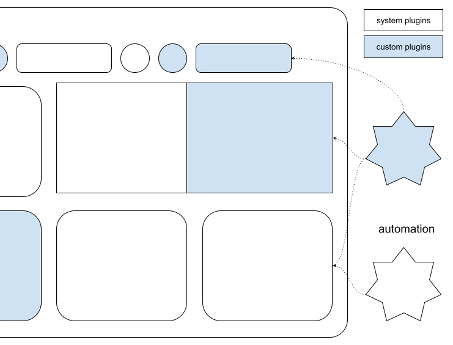

Studio Automation
The Trados Studio Integration API enables third-party developers to extend, customize, and integrate custom functionalities into the Trados Studio application.

Required Project References
Add the following references to your project. You can find them in the Trados Studio installation folder:
- Sdl.Desktop.IntegrationApi.dll
- Sdl.Desktop.IntegrationApi.Extensions.dll
- Sdl.TranslationStudioAutomation.IntegrationApi.dll
- Sdl.TranslationStudioAutomation.IntegrationApi.Extensions.dll
- Sdl.FileTypeSupport.Framework.Core
- Sdl.FileTypeSupport.Framework.Implementation
- Sdl.ProjectAutomation.Core
- Sdl.ProjectAutomation.FileBased
- Sdl.ProjectAutomation.Settings
Important Configuration
Important
Choose %AppData%\Trados\Trados Studio\19\Plugins\Packages\ as the build output path for your implementations.
Ensure your library references point to the Trados Studio folder (for example, C:\Program Files\Trados\Trados Studio\Studio19).
For detailed information, see Building a plug-in and Plug-in deployment.
Sign your assemblies with a strong name to enable loading in Trados Studio. See How to: Sign an Assembly with a Strong Name.
Using a different build output path or failing to sign your assembly prevents your plug-in from loading.